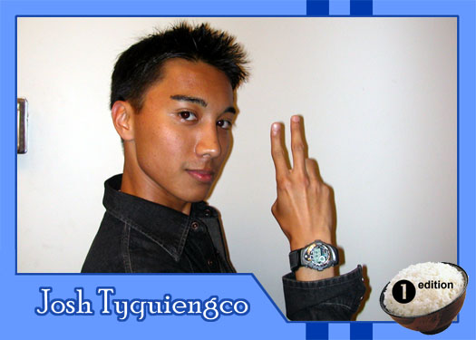

|
Why did you get involved with Theatre Rice? Believe or not, but while I was growing up on Guam, I did a lot of theater performaces until high school. Then I entered college and missed performing. So with the persuasion of my old rice friend Joyce, I checked out a meeting and *ahem*, here I am today. Funny thing is, I left the 1st meeting early because I doubted myself, but I made up my mind and ran back 15 minutes later to sign up for an audition. So to all of you doubters...believe in yourself and great opportunities will come your way! What do you hope to gain from TR? I still want to gain new friendships in this group and maintain my old ones. I feel it's time for me to pass on what I know about TR to the new generations before I graduate! Who are your role models? My main role models exist within my family on Guam & Hawaii, including my parents. I find my inner strength within them, especially when it gets hard living on my own. But I can't forget my friends...both on Guam and here. They are always so supportive and keep me grounded. What are your favorite films or t.v. shows? Before it ended, I was a Buffy fanatic!! However, these days I love watching Smallville, Angel, Everwood, Alias, Friends, One Tree Hill, & couple MTV shows. For films, I'm into most super-hero based movies, the American Pie Trilogy, the Matrix, Signs and couple other action/horror/adventure based films. (Too many to mention!) What message would you give to the future generations of Theatre Rice? To all you future ricers, don't let Theatre Rice become your life. It may be a great learning outlet for acting & writing, crazy ideas, raising issues and awareness, and making new friends...but always remember there's life after rice. Theatre Rice is definitely an experience worth taking in college. I've had so many fun memories these past couple semesters...so make sure you have fun as well! But always remember, do what's best for yourself! You'll be more satisfied in the end. |